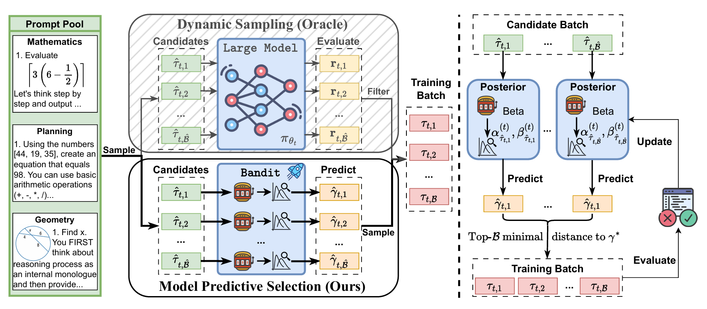
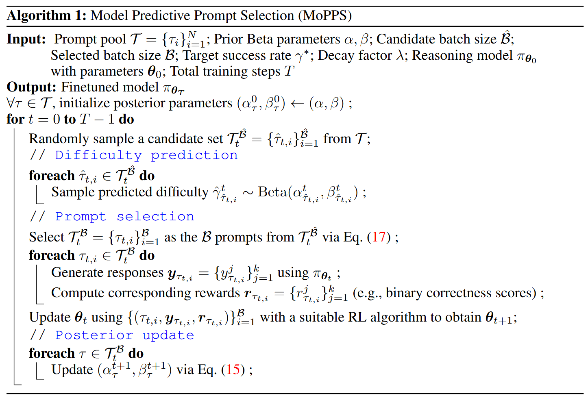
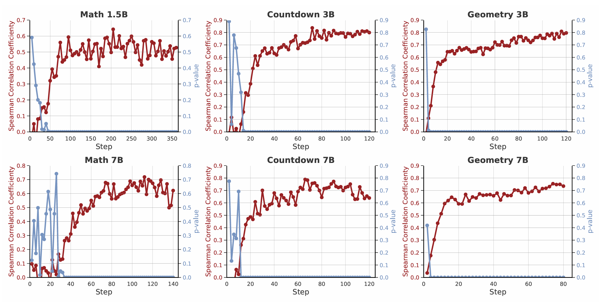
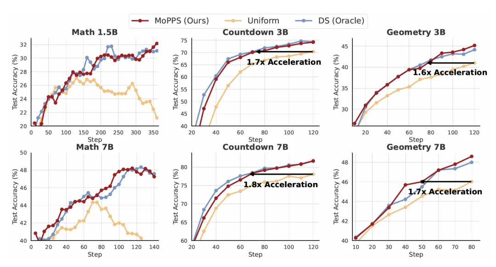
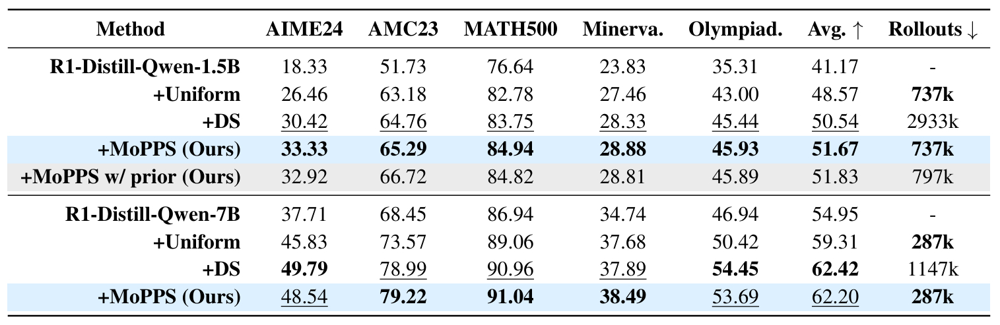
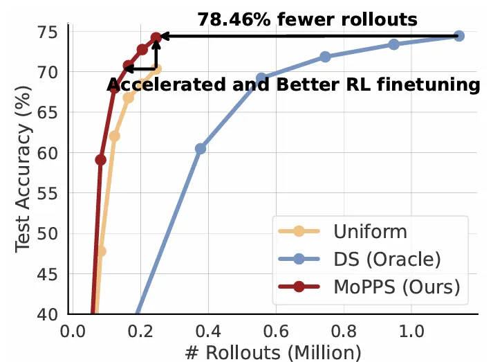

Faster, Cheaper, Smarter: Accelerating LLM Reasoning with Predictive Prompt Selection
Title: Can Prompt Difficulty be online Predicted for Accelerating RL Finetuning of Reasoning Models?
Paper: https://arxiv.org/abs/2507.04632
Authors: Yun Qu, Qi Cheems Wang, Yixiu Mao, Vincent Tao Hu, Xiangyang Ji
Institutions: THU-IDM, Tsinghua University; CompVis @ LMU Munich
Keywords: Reinforcement Learning, Reasoning Models, Model Predictive Sampling
Reinforcement learning (RL) finetuning has unlocked impressive reasoning abilities in Large Language Models (LLMs) for complex areas like mathematics and planning. However, this power comes at a steep price. The training process is notoriously resource-intensive, demanding massive computational power for model inferences and policy updates.
While recent online prompt selection methods aim to improve efficiency by focusing on the most informative prompts, they share a critical bottleneck: they still rely on performing expensive LLM evaluations on a large number of candidate prompts just to decide which ones to use for training. This "evaluate-then-select" pipeline, while effective, burns through GPU cycles.
This work aims to answer two research questions (RQs) below - Can prompt difficulty be dynamically predicted without exactly interacting with LLMs? - How can predicted outcome serve data selection for enhancing LLMs' reasoning power?
We introduce Model Predictive Prompt Selection (MoPPS), a new framework that does exactly that. MoPPS reframes prompt selection, shifting from expensive direct evaluation to efficient, amortized prediction.

Figure 1: Framework Overview. Left: Comparison between Dynamic Sampling (Oracle), which filters prompts based on actual LLM evaluation on candidates, and our Model Predictive Prompt Selection (MoPPS), which predicts success rates to avoid extra inference cost. Right: MoPPS predicts success rates for candidates from posterior parameters, based on which prompts closest to a target \(\gamma^*\) are selected for training; the posterior is then updated using new feedback.How MoPPS Works: Predict, Don't Just Evaluate
The core idea is simple yet powerful. We treat online prompt selection as a multi-armed bandit problem, where each prompt is an "arm". The "reward" for pulling an arm is the prompt's success rate, a latent variable we want to estimate.
Instead of running the full LLM, MoPPS uses a lightweight Bayesian surrogate model for each prompt. This model maintains a belief about the prompt's success rate (as a Beta distribution) and recursively updates this belief over time using the actual outcomes from prompts that were selected for training.
At each step, to select a training batch, we:
- Sample Candidates: Randomly sample a large set of candidate prompts, which can be easily extended to the full prompt pool.
- Predict Difficulty: For each candidate, we use Thompson Sampling to draw a predicted success rate from its current Beta posterior distribution. This step is incredibly fast and requires no LLM inference.
- Select for Training: We then build our training batch by selecting the prompts whose predicted success rates are closest to a target value (e.g., 0.5), which are often the most informative for learning.
- Update Posteriors: After the selected batch is used to generate responses and collect rewards, this new feedback is used to update the posterior parameters via a recursive Bayesian update rule, which accumulates evidence over time and allows the predictive models to adapt as the main LLM evolves.
This "predict-then-optimize" approach allows us to intelligently select high-quality prompts without the massive overhead of traditional methods.

The Results: Massive Efficiency Gains
So, does it work? The evidence is compelling.
-
Accurate Prediction: Our Bayesian model's difficulty predictions show a consistently high Spearman rank correlation with the empirical success rates, validating that our lightweight surrogate is an effective proxy for costly LLM evaluations.

Figure 2: The predicted prompt difficulty from our Bayesian surrogate strongly correlates with the empirical success rate across various tasks and model sizes[cite: 41, 42]. -
Accelerated Training: MoPPS significantly speeds up RL finetuning. For example, on the Countdown planning task, it achieves up to a 1.8x speedup over uniform sampling.

Figure 3: Training curves of MoPPS and baseline methods across three reasoning tasks with varying backbone sizes. Notably, DS serves as an oracle baseline, as it relies on expensive exact LLM evaluations and demands significantly more rollouts.
- Drastically Reduced Cost: This is the most significant advantage. Compared to evaluation-heavy methods like Dynamic Sampling (DS), MoPPS achieves comparable or even better final performance with a fraction of the computational cost. On the Countdown task, MoPPS requires 78.46% fewer rollouts. On the MATH dataset, it achieves similar performance to DS with only 25% of the rollouts.

Figure 4: MoPPS achieves the same accuracy as DS with significantly fewer LLM rollouts, demonstrating huge computational savings.Why It Matters
MoPPS offers a more sustainable path for developing powerful reasoning models. By replacing the most expensive part of the online selection pipeline with a highly efficient predictive model, it lowers the computational barrier, saves significant resources, and accelerates the development cycle. It is a versatile framework that is easy to implement and can be integrated with a variety of RL algorithms and LLM backbones.
We believe this approach is a critical step towards more efficient and accessible RL finetuning for the entire community.
To learn more, please check out our full paper!